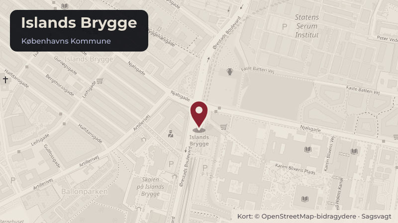

Behandlet 24. november, Amager Vest Lokaludvalg
Orientering: Ungeseminar 2026 Islands Brygge og Amagerbro
Skoler og børnUnge og uddannelse

Kort fortalt
- Hvem
- Amager Vest Lokaludvalg
- Hvornår
- Tirsdag 24. november 2026
- Status
- Behandlet. Referatet med beslutningen er ikke offentliggjort endnu.
Er noget forkert her? Skriv til os
Læs hele sagen Kommunens egen tekst
Indstilling
Formanden for Amager Vest Lokaludvalg indstiller, at lokaludvalget tager orienteringen til efterretning.
Problemstilling
Amager Vest Lokaludvalg afholdt den 29. oktober 2026 Ungeseminar 2026: Islands Brygge og Amagerbro, planlagt af arbejdsgruppen Børn & Unge. Her deltog lokaludvalget, skoleledelser, elever og en række lokale ungeaktører i dialog om, hvordan man kan styrke samarbejdet i området og skabe bedre rammer for unge mellem 13 og 18 år.
Resultater og videre arbejde
Seminaret resulterede i et nyt lokalt netværk blandt deltagerne, som fremover kan samarbejde med hinanden og lokaludvalget om at forbedre de unges hverdag.
Lokaludvalget afholdt i 2025 et lignende seminar i Ørestad, hvor der også opstod nye samarbejder og en netværksliste. På længere sigt er ambitionen at afholde flere ungeseminarer i bydelens øvrige kvarterer med henblik på at samle aktørerne til ét fælles seminar for hele Amager Vest og etablere et netværk på tværs af bydelen.
Arbejdsgruppen Børn & Unge opfordrer lokaludvalgets medlemmer til at gøre brug af de ungenetværk, der er opstået som resultat af de seneste ungeseminarer.
Herunder en opsummering af Ungeseminar 2026, som var inddelt i fire temaer:
1. Fastholdelse af unge i fritidsaktiviteter
Deltagerne drøftede udfordringer med at fastholde unge i fritidsaktiviteter, særligt når aktiviteterne bliver mere konkurrenceprægede, eller når skole, fritidsjob og andre forpligtelser fylder mere. Der blev peget på behovet for mere fleksible fritidstilbud, stærke fællesskaber og større medbestemmelse for de unge. Derudover blev forbedrede kontingentstøtteordninger og muligheder for frivillige opgaver i foreningslivet foreslået.
2. Skolen som mødested efter skoletid
Deltagerne drøftede mulighederne for at bruge skolernes faciliteter til aktiviteter efter skoletid, eksempelvis musik, madlavning, sport og kreative værksteder. De unge udtrykte stor interesse for mulighederne, men manglede kendskab til dem. Der blev indgået en konkret aftale mellem Ungeværk og skolen om at koordinere brugen af skolens musiklokaler, køkken og hal. Klubberne og skolerne vil desuden arbejde på at indgå flere aftaler om brugen af faciliteterne.
3. Bedre inddragelse af unge i hverdagen
Deltagerne drøftede, hvordan unge kan få større reel indflydelse på deres hverdag. De unge oplever, at de ofte bliver spurgt om deres mening, uden at det nødvendigvis fører til handling. Der blev derfor peget på behovet for tydeligere rammer for inddragelse, større tillid fra de voksne og bedre opfølgning på de unges idéer. Samtidig blev det fremhævet, at inddragelsen også skal nå de unge, der normalt ikke deltager i organiserede fællesskaber.
4. Samarbejde mellem ungeaktører og erhvervslivet
Deltagerne drøftede mulighederne for at styrke samarbejdet mellem lokale virksomheder, skoler, klubber og foreninger. Praktik, mentorforløb og fritidsjob blev fremhævet som muligheder for at give unge erfaring med arbejdslivet. Der blev desuden peget på potentialet i at skabe stærkere lokale netværk og give unge mulighed for lønnede opgaver i foreningslivet, eksempelvis som hjælpetrænere.
Løsning
At lokaludvalget tager orienteringen til efterretning.
Økonomi
Orienteringen har ingen økonomiske konsekvenser for Bydelspuljen.
Kilde: Københavns Kommune, Amager Vest Lokaludvalg, referat fra mødet tirsdag 24. november 2026, punkt 8. Læs den originale sag hos kommunen.
Steder i sagen: Islands Brygge · Amagerbro